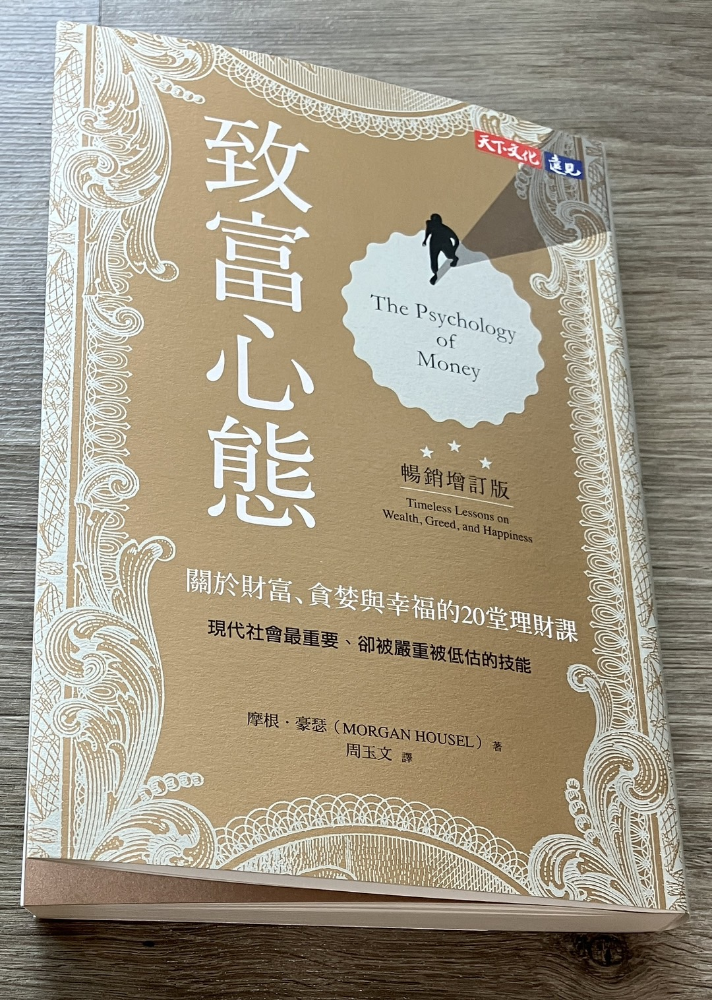

致富心態-摩根.豪瑟(天下文化)

自從看過綠角以及約翰柏格的理財書及自傳後，我就鮮少接觸有關理財的書籍。原因之一是因為這兩位的投資的策略大致相同，就是持續的投資還有資產配置，接下來就是等在長時間投資所產生的複利效應，為投資人帶來豐厚的報酬。由於這幾年這樣的策略運作良好(主要是美國股市真的漲得太誇張)，所以策略沒有調整的必要，自然就不會想去找其他的理財書去讀，也可以把原本要拿來選股的時間，多陪陪家人，做自己想做的事。但是最近群組裡面有一些大老推薦這一本書，加上女王也想要看這本書，於是就入手了。 。
其實這一本書跟大部分教你投資或是選股的方式大異其趣，反而重點是放在投資人的心理如何影響他的決策，進而做出外人看起來無法理解的決定。例如，當股災來臨時，大家都知道只要撐過去，接下來就有機會上漲了。但是，當你身在其中，一天報暴跌10%，加上手頭沒有充足的資金，家裡的帳單不斷地湧上，這時的恐懼就會強烈的縈繞在你的心頭，揮之不去，即便理智上應該要持續持有，你還是有可能會出清手頭上的股票，而錯過上漲的機會。另外，作者有提到我們的投資方式和策略，會受到我們成長環境的影響，假設你是經歷過美國1930年代的人，你經歷過大蕭條的恐懼，這時你就會傾向儲蓄或是投資債券，如果你是經歷過景氣大好的人，你就會有很大的概率選擇投資股票市場。
作者在書中也提到兩個比較重要的觀念，第一個是要有容錯的空間，第二就是長尾效應。第一個主要是在闡述人一定會犯錯，不管是誤判情勢，或是客觀上你已經做出最正確的決定時，股票市場卻做出非理性的反應，這時假設你有身邊仍有充足的資金，這筆錢就可以讓你在遇到意外時恢復信心，幫助你度過難關。也因此作者也強調儲蓄的重要性，你不必為了甚麼理由存錢(例如買車、買奢侈品)，儲蓄率的高低將會影響你日後是否會致富的關鍵，還有你在股票市場上存活的機會。
長尾效應作者則是以亞馬遜作為例子，亞馬遜在經營上曾經有許多的嘗試，除了AWS還有電子書之外，甚至還有發展手機，雖然亞馬遜很多的計畫還有嘗試都失敗了，但是往往只要少數的計畫可以成功，就可以帶來豐厚的收入，使得公司得以持續的生存下去。像巴菲特的波克夏也是，波克夏絕大多數的投資獲利都是差強人意，往往可以幫波克夏投資人帶來利潤的，都只有少數幾檔股票而已。所以，當你投資遇到失敗時，可以把它當成得到豐厚收入所要付出的代價，或者像是罰單，很多人會為了去遊樂園而付高額的門票，但是卻不願為賺取豐厚利潤而冒失敗的風險。當然，上述前提是在你有足夠的存款時，你才有辦法在未來賺取豐厚的收益。
這本書最有趣的地方，是有講到美國人喜歡過度消費。這個習慣可以追溯至第二次世界大戰剛結束。在戰時，美國（其實很多國家都是）幾乎所有的生產資源都拿來生產武器或軍用物資，很少會有人會去蓋房子。但是戰爭結束後，會有兩大問題。1600萬參與戰爭的人即將回國，這些人將何去何從（工作機會在哪裡）？這會是巨大的經濟和社會問題。還有戰爭結束後，預期的會有通貨膨脹，到底是要提升利率，還是要維持低利率？
後來美國提出了一系列對退伍軍人優惠的措施，還有更多更方便的貸款服務，即便一般民眾都可以有機會買高級的電冰箱，高級的房車等等。也就是說，在那個時代，中產階級和有錢人的差距沒那麼大，即便薪水有差，但是在生活上，不分階級可以擁有同樣的消費行為（追求消費上的平等）。在那個世代，負債並不可怕，同時也不是問題，因為負債比仍在控制之中。但是現在薪資級距拉大，再用二戰那時的思維消費，你會快速破產。可是二戰之後的的典範建立已經起來，而且根深蒂固在人們心中，所以現在要鼓勵美國人存錢幾乎是不可能的事。所以那時候的鼓勵消費是有時代背景的，那時是為了要解決戰後的經濟問題，所以才會鼓吹消費。讓大部分人在消費上得到平等。
因此，無論你的投資策略如何，都要想辦法讓你的儲蓄率上升，因為你要用投資策略增加0.1%的利潤要花很大的力氣，但是要增加0.1%的儲蓄是相對比較容易的。所以大家就努力存錢吧!
延伸閱讀:
赤字迷思-現代貨幣理論和為人民而生的經濟(史蒂芬妮‧凱爾頓)[投資理財]約翰·博格(John C. Bogle)共同基金常識10週年紀念版
另外，美國購物代運可參考:
https://a1253247.blogspot.com/p/hopshopgo-vs-spexeshop.html
對板球有興趣的可參考:
https://a1253247.blogspot.com/2022/05/cricket-line-written-by-admin-24-10.html
對生活飲食有興趣，可參考: